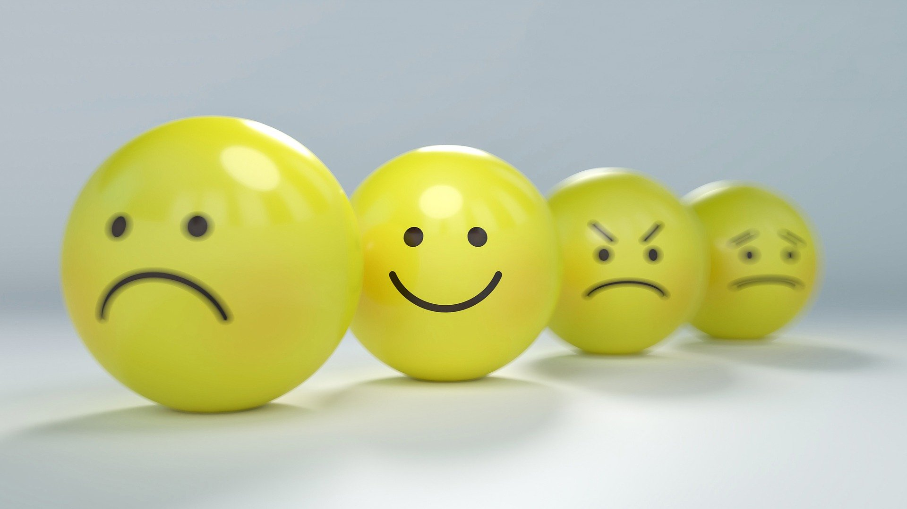

How to Fight Anxiety
Janie Imasuen
March 04, 2022
Category: Health
Anxiety is one of the most common mental health battles that humans have had to deal with for centuries. It is caused by the thought or concerning of something happening or about to happen. It is usually followed by fear, heart palpitations, sweat, naeusa and in some cases, sudden bowel movements. Anxiety is common among all age groups, especially teenagers and young adults.
Causes of Anxiety
Common causes of Anxiety are Fear of the Unknown, e.g going out, illness, waiting for a result etc, Worry, Interviews Stress and Stressful Activities, Trauma, Debt, Any other situation that causes you worry. Anxiety can also be a side effect of a much more deeply rooted mental disorder. Usually, It is advised that one seeks professional diagnoses for these advanced situations.
"Anxiety can also be a side effect of a much more deeply rooted mental disorder"
Other anxiety triggering stress situations include, stress from exam preparation, work, childcare, etc. Poor hygiene and Diet might lead to some imbalance that could cause anxiety. Anxiety can also deteroraite into Anxiety disorders.
Avoiding Triggers
To Avoid triggers and handle Anxiety, Here are a few tips:
- Avoid situations and activities that make you anxious, e.g if you do not like swimming, you should not join a swimming club, etc
- Meditation and Mindfullness practise
- Breathing Exercises
- Healthy Diet and Personal Hygiene
- Listening to calming music and podcasts
- Good Sleeping Habits
- Develop Good Interpersonal skills to handle difficult situations.